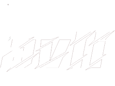
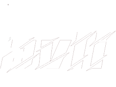
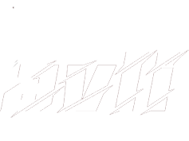
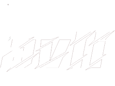

ICT & Media Design Portfolio
 


 

Ik heb regelmatig mijn voortgang gerapporteerd via FeedPulse wanneer ik in gesprek ben gegaan met mijn docenten. Hierin deelde ik informatie over mijn wekelijkse taken, mijn bijdrage aan groepsprojecten en eventuele feedback op persoonlijke projecten. Helaas waren er enkele weken zonder geopende checkpoints van docenten, maar ik heb de meeste feedback bijgehouden in notities.
Dit semester heb ik voornamelijk feedback gekregen over wat ik moet verbeteren, wat voor mij vaak zorgwekkend was. Ik kreeg namelijk het idee dat ik heel slecht bezig was. Wat ik raar vond, want je zou zeggen dat de tweede keer een semester doen beter zou moeten gaan. Zeker nu ik AD (Associate Degree) doe i.p.v. Bachelor.
Dit semester ontving ik voornamelijk feedback op mijn online portfolio. De nadruk lag op het verbeteren van de UX/UI, zoals het verwijderen van onnodige elementen en het toevoegen van heldere reflecties bij projecten. Er werd geadviseerd om het portfolio beknopter en formeler te maken. Verdere feedback richtte zich op het minimaliseren van onnodige elementen, het aanpassen van kleuren en het verminderen van animaties. Een gestructureerde aanpak voor het portfolio-proces werd aanbevolen, inclusief onderzoek, wireframes, design en testen. Belang van A/B testen en het toevoegen van relevante projecten aan de leeruitkomsten werd benadrukt. Over het geheel genomen werd gestreefd naar een professionelere uitstraling, betere onderbouwing en meer focus op de inhoud van het portfolio.
Vorig semester hebben de FeedPulse momenten mij erg geholpen in mijn groei. Dit semester schrok ik er meer van dan dat het mij hielp, zoals ik al eerder aangaf. Ondanks dat ben ik in elke leeruitkomst wel een beetje meer gegroeid.
Je kunt de feedbacknotities die ik heb bijgehouden en de Feedpulse die ik dit semester op Canvas heb staan hieronder vinden.
Copyright ©2023 By Bavli Armanyous, All Rights Reserved